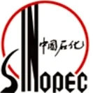

创立于工业安全智能化浪潮与绿色低碳转型加速的时代风口
硕秒科技（无锡）有限公司专注气体安全监测领域，秉持"科技守护生命，创新驱动未来"的核心使命，专注于可燃、有毒有害气体探测器的研发、制造及销售。
公司同时深耕基于激光技术（TDLAS）、光谱视觉技术（气云成像）的前沿产品，以及企业特殊作业环境安全监测设备的研制，为化工、能源、消防等高风险行业量身打造全场景安全监测系统解决方案。
公司组建了由拥有 15 年以上行业资深专家挂帅的研发团队，并与无锡学院展开深度产学研合作，构建起从基础"点检"到全方位"立体化监测"的完备技术矩阵，赋能企业搭建数字化安全管理体系。
了解我们 →固定探测 — 报警控制 — 便携检测 — 移动监护 — 气云成像，覆盖气体安全监测全场景

电化学传感 · 数字 LED 显示 · Ex db ib IIC T6 Gb · IP66

催化燃烧原理 · 传感器模组免校准 · 双芯片驱动

电化学原理 · 8 类毒性气体 · 传感器模组免校准

双波长红外 3.8 / 4.4μm · 探测距离 ≤50m · 隔爆型
三波长 3.8/4.4/5.3μm · 抗干扰更强
四波长 2.7-5.3μm · 误报抑制最高
185-260nm 紫外 · 爆燃瞬间响应
双红外 + 紫外复合判断 · ≤120° 视角 · 抗干扰强
三红外 + 紫外复合判断 · 抗干扰全面
同 UVIR2 配置 · 响应更快
同 UVIR3 配置 · 响应更快

可燃气体检测 · 小巧便携约 150g · 声光振动报警

EX / O₂ / CO / H₂S 同测 · 防水防尘防爆 · 便携耐用

32 位微处理器 · 多点集中采集 · 六组继电器联动输出

150 路 RS485 · 8 寸彩色触摸屏 · 6 组可编程继电器

卡件式扩展 · 每卡件 1 路 4-20mA + 98 点总线

点对点独立回路 · 壁挂 / 盘装 / 立柜式机体

探测 — 报警 — 联动 — 上传闭环 · 总线 / 多线制选型

视频 + 气体双数据源 · 4G/5G 实时传输 · 星光夜视

制冷型红外探测 ≤15mK · 400+ 气体 · AI 算法主动报警

长寿命 PID 传感 · 泵吸式采样 · T90<15s · RS485/HART 可选

常见易燃气体蒸气 101 种 + 有毒气体氧气 26 种，引两国标
从基础"点检"到全方位"立体化监测"的完备技术矩阵
制冷型中波红外探测器，热灵敏度 ≤15mK，远距离观测泄漏气体云逸散并准确定位。
基于激光吸收光谱的前沿探测路线，赋能特殊作业环境安全监测。
机器学习算法实现泄漏气体浓度空间分布与扩散范围的可视化识别并主动报警。
支持 GB 28181 / ONVIF 协议并提供 SDK，易于与第三方软件平台集成。

| 行业 | 项目案例（仅部分） | 典型场景 |
|---|---|---|
| LNG/CNG 天然气 | 中石油宁夏中卫 LNG 加气站、中海油天津滨海项目、尼日利亚迈古里 MEPP 项目 等 | 储备调峰站 / 加气站 / 城市气化 / LNG 储罐 |
| 工业厂房 | 中国物理研究院（绵阳九院）、太极集团、重庆长安工业 等 | 生物制药 / 化工 / 厂房 / 库房 / 军工 |
| 电力行业 | 阜阳华润电厂 2×660MW 超超临界、大唐普格马洪风电场、华能康定电站 等 | 火电 / 水电 / 风电 / 变电站 |
| 酿酒行业 | 茅台集团习酒公司、剑南春集团、西凤酒 10 万吨基酒项目 等 | 酒库 / 白酒酿造储存 / 灌装区 |
| 公共建筑 | 浙江大学、中国民航局第二研究所、成都贝塞思国际学校 等 | 学校 / 现代建筑 / 民航 / 轨道交通 |
| 综合行业 | 中石油太子城加氢站（首座）、圆通西南总部基地、西藏巨龙铜业二期 等 | 新能源 / 仓储物流 / 铜矿 / 餐饮 |
覆盖全国 25 个省区市 · 含尼日利亚 / 埃塞俄比亚等海外项目
ISO 三体系管理认证 + 防爆合格资证
 质量管理体系认证 · ISO 9001:2015
质量管理体系认证 · ISO 9001:2015 环境管理体系认证 · ISO 14001:2015
环境管理体系认证 · ISO 14001:2015 职业健康安全管理体系认证 · ISO 45001:2018
职业健康安全管理体系认证 · ISO 45001:2018 防爆合格证 · 点型可燃气体探测器 GTYQ-F950
防爆合格证 · 点型可燃气体探测器 GTYQ-F950 防爆合格证 · 点型气体探测器 GTYQ-F950
防爆合格证 · 点型气体探测器 GTYQ-F950 防爆合格证 · 移动式监护卫士 M900
防爆合格证 · 移动式监护卫士 M900 防爆合格证 · 点型可燃气体探测器 GTYQ-F900
防爆合格证 · 点型可燃气体探测器 GTYQ-F900 防爆合格证 · VOCs 探测器 TF950-PID
防爆合格证 · VOCs 探测器 TF950-PID 防爆合格证 · 点型气体探测器 TF900
防爆合格证 · 点型气体探测器 TF900产品设计依据 GB/T 50493-2019《石油化工可燃气体和有毒气体检测报警设计标准》；职业接触限值依据 GBZ 2.1-2019
告诉我们您的场景与目标气体，硕秒科技为您匹配全场景安全监测方案